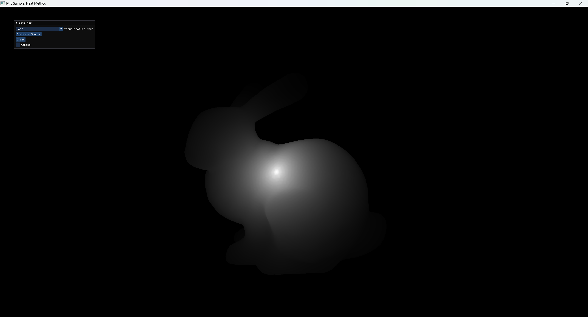
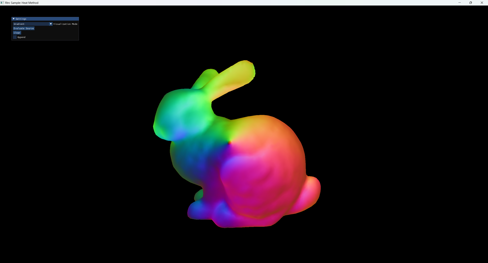
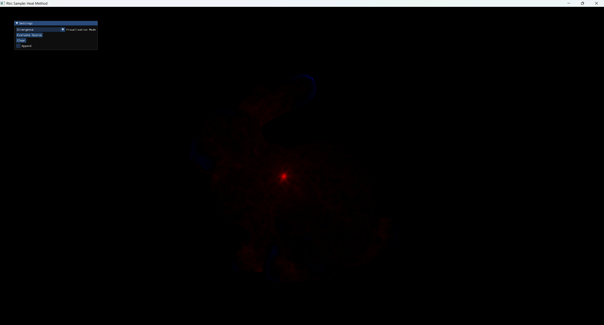
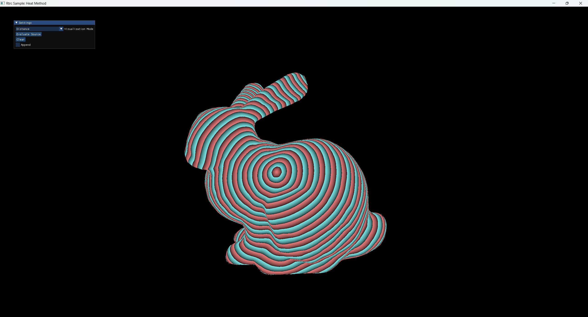
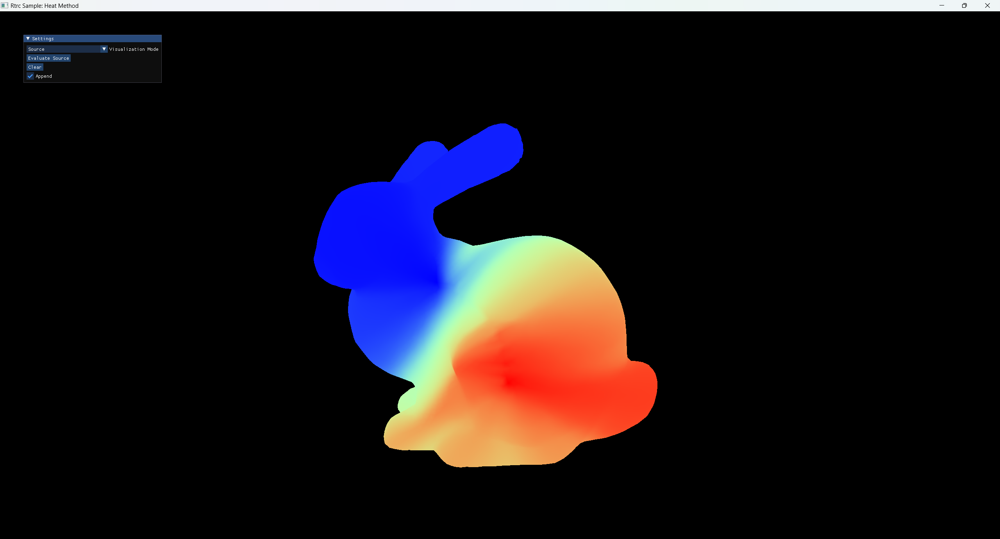
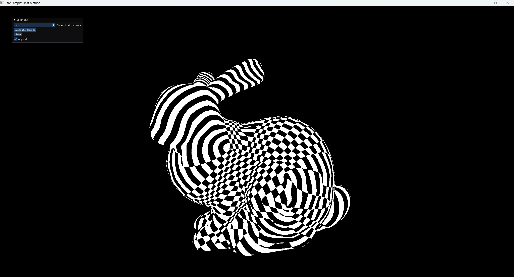

给一个triangle mesh ，以及上面的一组点，求上其他所有顶点到的测地距离。
参考资料：The Heat Method for Distance Computation
本文代码：Rtrc Sample 15.HeatMethod
Heat Method
理论
如果以某个点为热源在表面做heat diffusion，将经过时间后点的热量记作，那么根据Varadhan’s formula，和测地距离之间有如下关系：
换言之，我们可以用一个极短的时间步长模拟上的热传输过程，然后用上式计算测地距离。然而当距离较大时，Varadhan’s formula会对数值精度提出不切实际的要求。因此这个做法仅在理论上正确，实践中没什么人用。
Keenan Crane大佬注意到：尽管本身的数值精度不足以支撑Varadhan’s formula，但的梯度方向仍然是相对准确的，而的方向正好就是的方向。同时根据测地距离的定义，。因此，我们可以从计算出，而从还原的过程就顺理成章了。
综上所述，可以用以下算法计算：
- 选取一个较小的，计算
- 计算的梯度方向，这其实就是
- 取的散度，解Poisson方程，得到
这里细化第一步。Heat equation长这样：
取一个很小的时间步长，用backward Eular模拟一轮：
也就是：
是初始热源，则是我们所需要的。Triangle mesh上的算子可以参见我之前的博文Differential Operators for Triangle Mesh。
效果
我们在兔子上选一个点，首先模拟heat diffusion，得到：

利用离散梯度算子把转换成per-face的梯度并归一化，得到：

对求散度：

其中红色表示散度为正，蓝色为负。
最后，解poisson方程得到，其分段可视化结果为：

这就得到了兔子上每一点到起始点的测地距离。
也可以选取多个源点，乃至连成线：

标量传输
当源点不仅包含一个点，而是包含一条曲线、乃至一片区域时，我们可能不仅想知道其他点到的测地距离，还想知道每个点和中的哪个点最近。
换言之，如果给中的每个点染个颜色，让这些颜色沿着测地线传播，那么我们想要求出mesh上每个位置最终的颜色。
首先，让我们给每个源点设定初始值：
沿着测地线传输，也就是说它在测地线方向上不会发生变化——
在实践中，我们对每个三角形，都可以从未知量构建上的；而上的是之前的heat method中已经计算过的。这样一来，我们就获得了方程数量等同于三角形数量的线性方程组，构成关于的稀疏线性系统。
Triangle mesh中的面数往往显著地多于顶点数（因为一个面至多对应三个顶点，而顶点的平均度数往往大于三）。在各种离散化和数值误差的掺和下，我们的线性方程组可以被看成是overdetermined。此时，可以用最小二乘法得到一组合理的值。
我们把上面那条曲线形状的的左上端染成蓝色，右下端染成红色，中间插个值，然后让颜色沿着测地线传输，得到的结果如下：

而如果把这里的做个arc-length parameterzation，把参数化结果沿着测地线传播出去，然后将测地距离和参数化结果分别转换为纹理坐标的两个分量，就能得到下面的结果：

在距离较近的局部区域，其表现还是相当令我满意的。